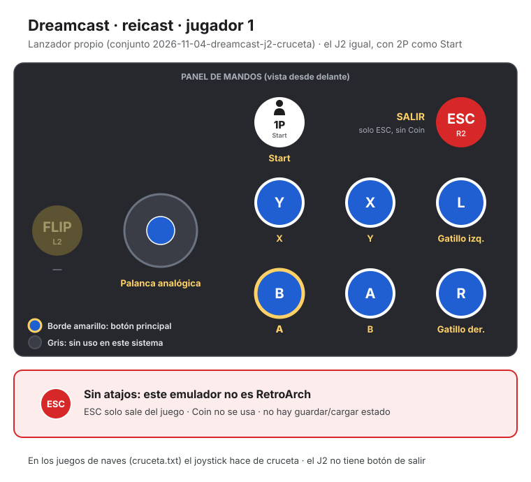
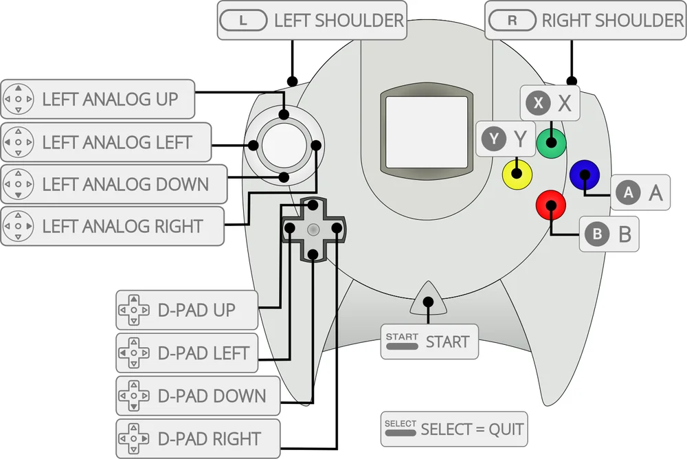

Dreamcast
Sonic Adventure 2
- Año: 2001
- Desarrollador: Sonic Team
- Género: Plataformas / Acción
- Jugadores: 2 jugadores
En Sonic Adventure 2, la batalla entre el bien y el mal se intensifica cuando dos fuerzas opuestas se enfrentan en una historia de caminos cruzados. El jugador puede elegir entre la historia "Hero", protagonizada por Sonic, Knuckles y Tails, quienes buscan salvar el mundo, o la historia "Dark", liderada por Shadow, Rouge y el Dr. Eggman, con el objetivo de conquistarlo.
Ambas tramas avanzan en paralelo, con eventos interconectados que generan enfrentamientos constantes entre ambos bandos. Sonic y sus aliados deberán detener los planes de Eggman, mientras Shadow persigue su propia misión, envuelta en misterios del pasado.
Con una jugabilidad variada, el juego combina velocidad, exploración y estrategia en distintos tipos de niveles, desde vertiginosas carreras hasta intrincados desafíos de plataformas. En esta lucha definitiva, el destino del mundo está en juego.
Controles
que el personaje se mueva con el joystick (palanca analógica). Según las guías: B salta (otra vez en el aire: ataque teledirigido o planear), A o Y hacen la acción (voltereta, golpe, disparar), X usa la acción que sale arriba en pantalla y L / R giran la cámara. ¿Sale en español? A dos jugadores «hace cosas extrañas»: concretar qué. ¿Va fluido?
Mando de Dreamcast: los botones son los mismos en todos los juegos (reicast no los cambia por juego). Los colores son los del mando original.
| Panel | Juego |
|---|---|
 | Mover (palanca analógica) |
 | A |
 | B |
 | Gatillo derecho |
 | X |
 | Y |
 | Gatillo izquierdo |
 | Start |
 | Salir del juego |
El panel en Dreamcast




Argumento
Recopilado de internet (2026-11-04). Lo marcado con ⚠️ no está probado en la bartop.
El Dr. Eggman lee en el diario de su abuelo, el profesor Gerald Robotnik, que existe un arma secreta, y entra en una base de la organización GUN para despertarla con una Esmeralda del Caos. El arma es Shadow, un erizo negro que se proclama «la forma de vida definitiva» y se ofrece a ayudar a Eggman a conquistar el mundo desde la colonia espacial abandonada ARK. Shadow cree haber prometido vengarse por la muerte de su amiga Maria, prima de Eggman. GUN detiene a Sonic al confundirlo con Shadow.
Knuckles rompe la Esmeralda Maestra para que no la roben Eggman y Rouge, una espía del gobierno, y busca los trozos. En la ARK, Shadow enseña a Eggman el Cañón Eclipse, que funciona con las siete esmeraldas. Tails y Amy rescatan a Sonic, y Eggman amenaza con destruir el planeta si no le nombran su soberano: lo demuestra destruyendo media Luna.
El juego cuenta la historia desde los dos bandos: la historia Hero (Sonic, Tails y Knuckles) y la historia Dark (Shadow, Eggman y Rouge), que avanzan en paralelo y se cruzan.
Final: al cargar el cañón, un mensaje grabado de Gerald revela que programó la ARK para estrellarse contra la Tierra, como venganza contra el gobierno que condenó su investigación y mató a sus colegas, Maria incluida. En la última historia todos se unen para llegar al núcleo del cañón. Amy convence a Shadow, que recuerda que su promesa a Maria era ayudar a la humanidad. Knuckles desactiva las esmeraldas con la Esmeralda Maestra, pero el Biolizard, el prototipo de la forma de vida definitiva, se fusiona con el cañón. Sonic y Shadow, en su forma súper, lo destruyen y devuelven la ARK a una órbita estable. Shadow, sin fuerzas, cae hacia la Tierra, en paz por haber cumplido su promesa.
Fuentes
Jugabilidad
Recopilado de internet (2026-11-04). Lo marcado con ⚠️ no está probado en la bartop.
- Estructura: dos campañas, Hero y Dark, que van alternando niveles de sus tres personajes; al acabar las dos se abre una última historia con los seis (ver «Guía de niveles»).
- Tres tipos de nivel:
- Velocidad (Sonic y Shadow): correr hasta el anillo «GOAL», con el ataque teledirigido y deslizándose por raíles.
- Disparos (Tails y Eggman, en robots): más lentos; fijar varios enemigos a la vez da más puntos.
- Búsqueda (Knuckles y Rouge): mapas abiertos en los que hay que encontrar tres trozos de la Esmeralda Maestra, con un radar que se ilumina al acercarse.
- Vida: los anillos. Al recibir un golpe con anillos los pierdes; sin anillos, pierdes una vida. Tails y Eggman tienen barra de vida, que se rellena con anillos.
- Mejoras: cada personaje encuentra objetos que le dan habilidades nuevas para siempre (ver «Objetos»).
- Chao: aparte de la historia, se pueden criar mascotas virtuales (Chao) con cinco atributos.
- Dos jugadores: hay un modo de combate a pantalla partida. ⚠️ En la bartop «hace cosas extrañas»: pendiente de ver qué pasa.
- Partidas: se guardan en la tarjeta de memoria (VMU) de reicast.
Botones según las guías (⚠️ por confirmar)
| Mando de Dreamcast | Panel | Acción |
|---|---|---|
| Palanca analógica | | Mover al personaje |
| A | | Saltar · en el aire, otra vez: ataque teledirigido (velocidad), planear (búsqueda) o flotar (disparos, con su mejora) |
| B o X | o | Acción: voltereta y, manteniendo, carrera giratoria (velocidad) · puñetazo o patada (búsqueda) · disparar y, manteniendo, fijar blancos (disparos) |
| A + B | + | Ataque rebotando (velocidad, con su mejora) |
| Y | | Usar la acción que sale arriba en pantalla (carrera de luz, palancas, gafas…) |
| Gatillo izquierdo / derecho | / | Girar la cámara |
| Start | | Pausar |
Guía de niveles
Recopilado de internet (2026-11-04). Lo marcado con ⚠️ no está probado en la bartop.
| Historia | Niveles (y jefes) |
|---|---|
| Hero | City Escape · Big Foot · Wild Canyon · Eggman · Prison Lane · Metal Harbor · Shadow · Green Forest · Pumpkin Hill · Mission Street · Aquatic Mine · Route 101 · Hidden Base · Pyramid Cave · Death Chamber · King Boom Boo · Egg Golem · Eternal Engine · Meteor Herd · Rouge · Crazy Gadget · Eggman · Final Rush · Shadow |
| Dark | Iron Gate · Hot Shot · Dry Lagoon · Sand Ocean · Radical Highway · Egg Quarters · Lost Colony · Weapons Bed · Tails · Security Hall · Flying Dog · White Jungle · Sonic · Route 280 · Sky Rail · Egg Golem · Mad Space · Knuckles · Cosmic Wall · Tails · Final Chase · Sonic |
| Última | Cannon's Core (con los cinco) · Biolizard · Final Hazard (jefe final, con Super Sonic y Super Shadow) |
- Route 101 y Route 280 son de carreras en coche.
- Nombres y orden: los de los capítulos del vídeo de «Vídeos».
Objetos
Recopilado de internet (2026-11-04). Lo marcado con ⚠️ no está probado en la bartop.
| Objeto | Qué hace |
|---|---|
| Anillo | Protege de un golpe (y rellena la vida de Tails y Eggman) |
| Mejora | Da una habilidad para siempre: guantes mágicos, zapatillas de luz, anillo de fuego, pulsera de rebote, garras pala, guantes martillo, collar de aire, gafas, bazuca, blindaje… |
| Melodía mística | Mejora que abre zonas secretas en varios niveles |
| Trozo de la Esmeralda Maestra | Lo que se busca en los niveles de Knuckles y Rouge |
- Las mejoras que se consiguen en cada nivel salen entre paréntesis en los capítulos del vídeo.
Trucos y secretos
Recopilado de internet (2026-11-04). Lo marcado con ⚠️ no está probado en la bartop.
Secretos
- Última historia: se abre al acabar las campañas Hero y Dark.
- Jardín de los Chao: cuidar y entrenar Chao, con sus carreras y concursos.
- Carreras en coche (Kart Racing) como modo aparte.
- ⚠️ No he encontrado trucos de botones para la versión de Dreamcast.
Fuentes
Longplay

Partida completa de la versión Dreamcast (258 min), de Experiment T, en la consola y sin comentarios: Sonic Adventure 2 LongPlay (Sega Dreamcast) (1080P HD) (No Commentary) (Real Hardware).
Pulsa el minuto de un nivel para ver el vídeo desde ese punto.
Niveles
| Historia | Niveles |
|---|---|
| Hero | Hero Side Story Preview ▶ 0:55Sonic: City Escape (Magic Gloves) ▶ 1:31Sonic: VS Big Foot ▶ 6:47Sonic: A Fake Hedgehog? ▶ 7:43Knuckles: Wild Canyon (Mystic Melody) ▶ 9:03Tails: VS Eggman (Prison Island) ▶ 12:50Tails: Prison Lane (Lock-On Upgrade) ▶ 14:12Sonic: Metal Harbor (Light Shoes) ▶ 19:07Sonic: VS Shadow (Prison Island) ▶ 23:21Sonic: Green Forest (Ancient Light) ▶ 24:34Knuckles: Pumpkin Hill (Shovel Claws) ▶ 28:53Hero Side Story: Day X ▶ 32:12Tails: Mission Street (Booster) ▶ 34:30Knuckles: Aquatic Mine (Air Necklace) ▶ 38:35Tails: Route 101 ▶ 42:32Tails: Hidden Base (Mystic Melody) ▶ 48:50Sonic: Pyramid Cave (Bounce Bracelet) ▶ 54:00Knuckles: Death Chamber (Hammer Gloves) ▶ 58:42Knuckles: VS King Boom Boo ▶ 1:06:03Sonic: VS Egg Golem ▶ 1:09:08Tails: Eternal Engine (Cannon Upgrade) ▶ 1:12:42Knuckles: Meteor Herd (Sunglasses) ▶ 1:22:04Knuckles: VS Rouge (ARK Mining Site) ▶ 1:27:54Sonic: Crazy Gadget (Flame Ring) ▶ 1:31:18Tails: VS Eggman (ARK Observation Lab) ▶ 1:37:36Sonic: Final Rush (Mystic Melody) ▶ 1:40:54Sonic: VS Shadow (ARK Outer Catwalks) ▶ 1:50:09Hero Side Story Ending ▶ 1:52:11 |
| Dark | Dark Side Story Preview ▶ 1:53:35Eggman: Iron Gate (Lock On Upgrade) ▶ 1:54:02Shadow: VS Hot Shot ▶ 1:58:34Rouge: Dry Lagoon (Mystic Melody) ▶ 2:02:05Eggman: Sand Ocean (Mystic Melody) ▶ 2:06:49Eggman: Hidden Base Retreat ▶ 2:12:06Shadow: Radical Highway (Flame Ring) ▶ 2:13:06Shadow: A Doppleganger? ▶ 2:18:22Rouge: Egg Quarters (Pick Nails) ▶ 2:19:36Eggman: Lost Colony (Booster) ▶ 2:25:05Eggman: Weapons Bed (Bazooka) ▶ 2:32:14Eggman: VS Tails (Prison Island) ▶ 2:37:57Rouge: Security Hall (Scouter) ▶ 2:39:18Rouge: VS Flying Dog ▶ 2:43:20Shadow: White Jungle (Air Shoes) ▶ 2:44:58Shadow: VS Sonic (Prison Island) ▶ 2:49:08Dark Side Story: Day X ▶ 2:52:19Rouge: Route 280 ▶ 2:55:28Shadow: Sky Rail (Ancient Light) ▶ 2:59:31Eggman: VS Egg Golem ▶ 3:03:37Rouge: Mad Space (Iron Boots) ▶ 3:06:52Rouge: VS Knuckles (ARK Mining Site) ▶ 3:13:51Eggman: Cosmic Wall (Armor) ▶ 3:16:40Eggman: VS Tails (ARK Observation Deck) ▶ 3:24:50Shadow: Final Chase (Mystic Melody) ▶ 3:28:10Shadow: VS Sonic (ARK Outer Catwalks) ▶ 3:37:55Dark Side Story Ending ▶ 3:39:54 |
| Última | Last Story: Opening ▶ 3:40:37Cannon's Core (Tails) ▶ 3:47:28Cannon's Core (Eggman) ▶ 3:48:59Cannon's Core (Rouge) ▶ 3:51:34Cannon's Core (Knuckles) ▶ 3:54:19Cannon's Core (Sonic) ▶ 3:56:16Shadow: VS The Biolizard (Eclipse Cannon Core) ▶ 3:59:40Super Sonic & Shadow: VS The Final Hazard (Eclipse Cannon Exterior) ▶ 4:08:58 |
| Otros momentos | Final y créditos ▶ 4:11:52 |